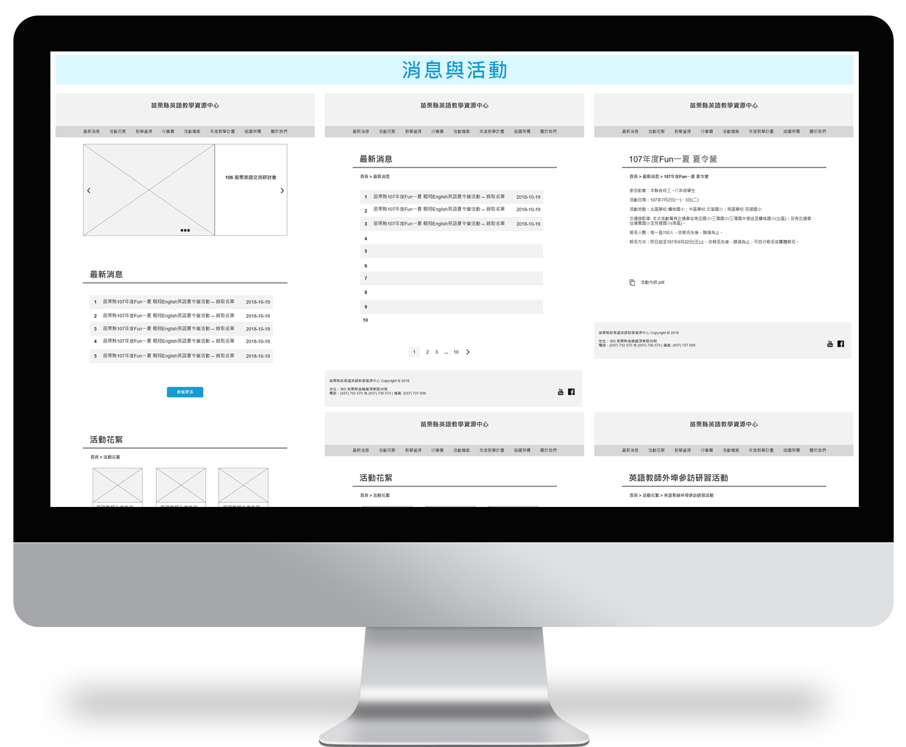
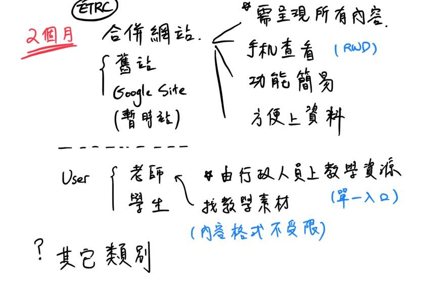
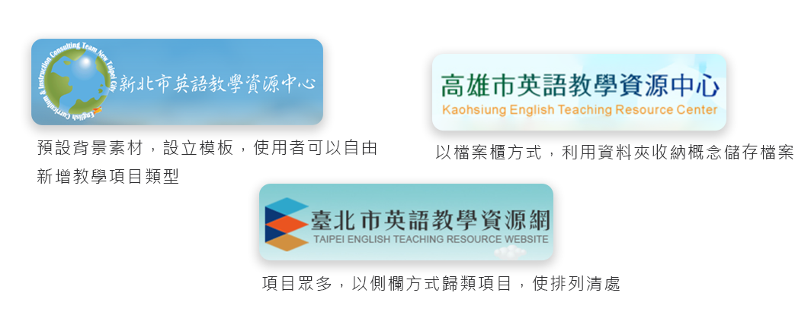
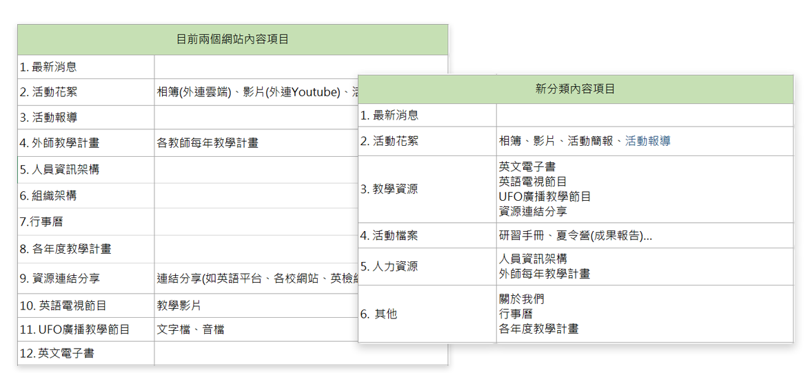
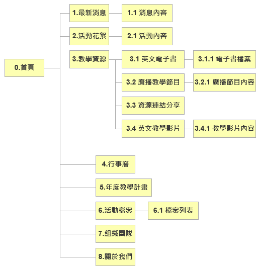
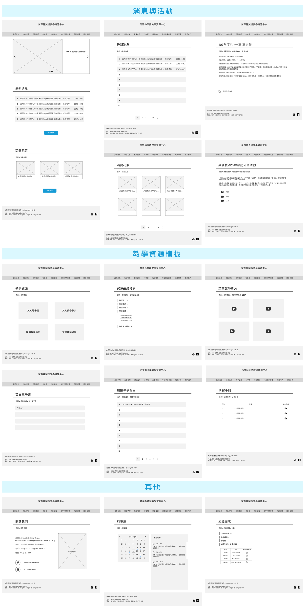

網站改版更新
本項專案為英語資源教學網站改版，目標為合併目前已於線上的兩個網站，並優化界面呈現。由於時間與預算有限，業主希望以保留現有內容為主，同時能方便更新資料。
網站規劃
2018 10-12
規劃網站的第一步需釐清網站目標與使用族群。起初會與業主溝通，了解為何做此網站，完成網站修改後預期達到什麼效果。訪談中，也透過業主認識該網站的使用族群，通常會在網站中進行什麼任務…等。另外會詢問是否計畫新增網站功能，與刪除項目的其他細項。
我們挑選了幾個其他縣市訪客率高的英資中心網站做參考。一方面是希望能蒐集網站風格的呈現方式，另一方面是想分析其各個方面表現的優點與缺點，並在網站規劃時納入思考或避免它。
分析英資中心網站的同時，我們大致了解未來可能上傳資料的類型，剛好補足目前資料未定的問題。對比網站的過程中，我更有方向重新整理與分類目前現有的內容，希望讓使用者可以比較容易找到相關的資源，也不會因為資源重複出現在不同位置造成混亂。內容重新分類如下：
完成分類後，做頁面架構規劃就輕鬆很多。由於此專案較為簡易，本階段將頁面流程納入考量，確認每個頁面的按鈕有彈跳視窗的反饋或合理的頁面跳轉。考量開發的成本，我將相似內容的頁面規劃為通用的模板，讓其可以重複使用。例如內容模板主要呈現文字與檔案下載，檔案模板則以清楚列出所有檔案，方便下載為主。
最後階段為頁面繪製。了解本網站以提供訊息與資源為主要目標，在訊息方面以列表方式希望能讓使用者清楚找到所需的資訊。網站中，所有提供下載的文件、音檔…等，均統一使用相同樣式，讓使用者可以快速辨認可下載的資源。
Wireframe繪製完成會搭配文件說明，以利設計師與工程師進行開發。內容包含詳細的元素互動方式、允許後台修改範疇、上傳檔案類別...等。
英資中心網站 舊站1 舊站2(END)
返回